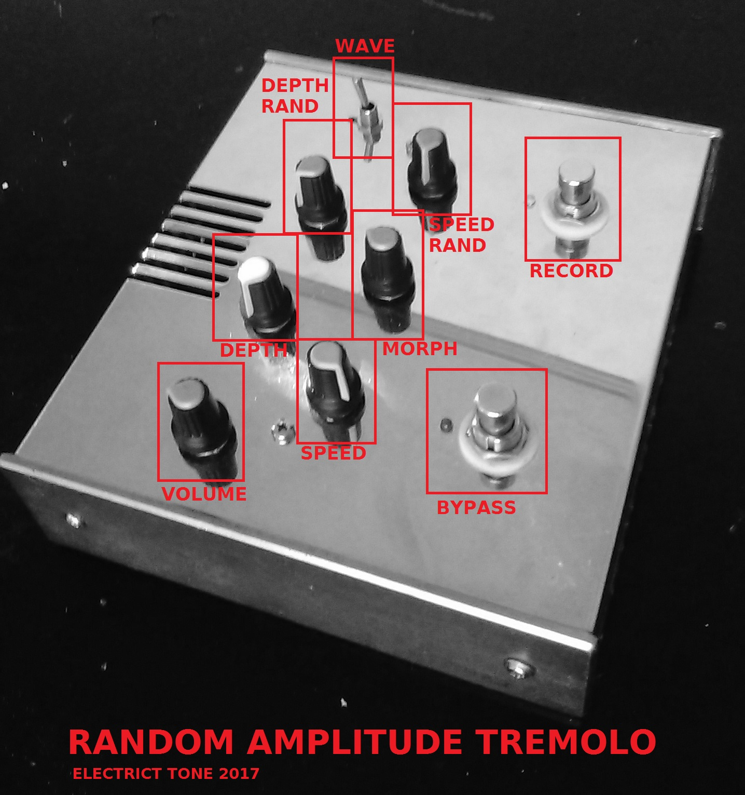

RANDOM AMPLITUDE TREMOLO
Basically a tremolo that can mix a regular waveform (square, triangle, saw) with a random signal that goes up and down in straight line. Another mode allows the recording of a signal to create a waveform.  The pseudo-random simply gives a fluctuating voltage. there's a morph controls that apply a phase distortion to the waveforms. The square has a pulse width control, the triangle can produce saw up or saw down waves, the sines produces more soft rounded signal. The record mode is a bit more interesting. In this mode the player can record a signal that it is used then as a random waveform. The processor doesn't record the sound per say, but takes points in the input signal (the sampling rate is rather low) and interpolate between them to create an amplitude signal that will modulate the input signal. The circuit uses a spare VTL5C3 optocoupler, due to its slowness the circuit can't go "ring mod" or more extrem modulation. The processor used is a STM32f030K6. A cheaper solution to the atmega328 that I used to use. the added features don't really matter in this application (although DMA is nice for ADC management).
{kind=link}